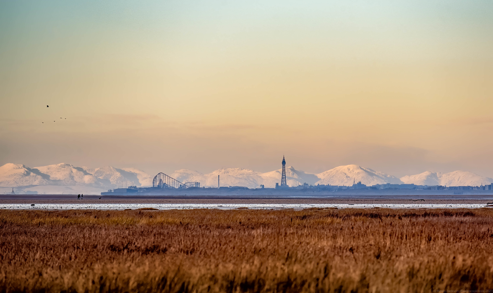
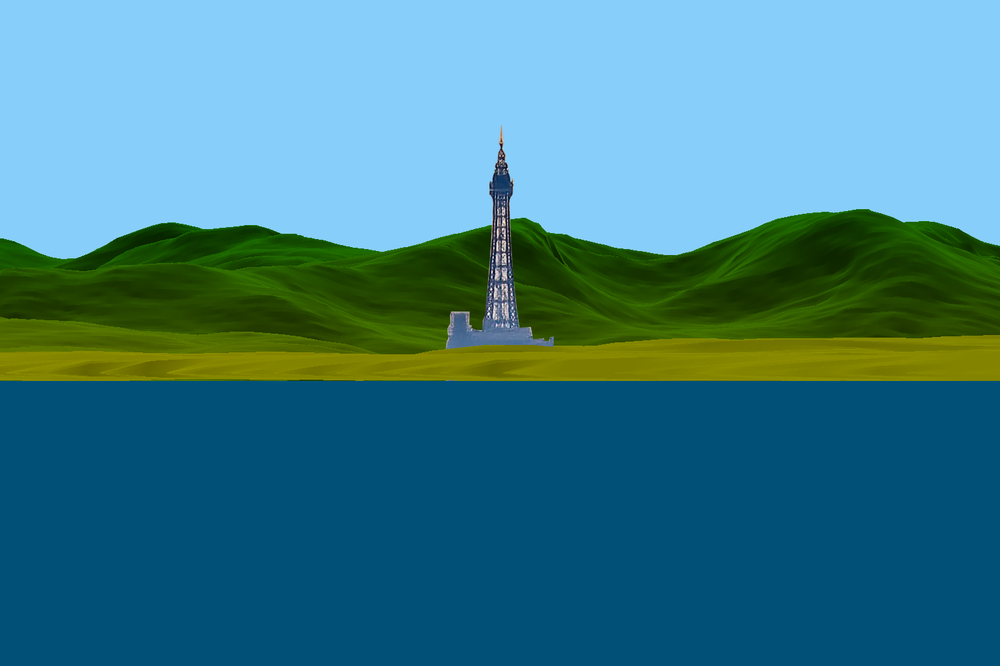
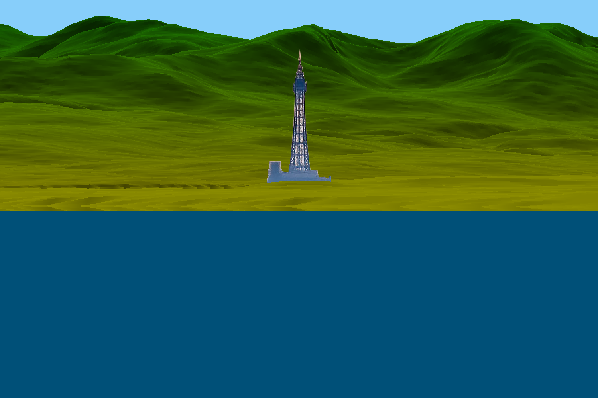

Black Pool Tower In Front of Moutains¶
back to Examples
In this example we try to model an image of Blackpool tower are a remarkably clear day. The day is so clear that you can easily see the moutains in the background which are significantly farther away.
1 2 3 4 5 6 7 8 9 10 11 12 13 14 15 16 17 18 19 20 21 22 23 24 25 26 27 28 29 30 31 32 33 34 35 36 37 38 39 40 41 42 43 44 45 46 47 48 49 50 51 52 53 54 55 56 57 58 59 60 61 62 63 64 65 66 67 68 69 70 71 72 73 74 | from refraction_render.renderers import Scene,Renderer_35mm,Renderer_Composite,ray_diagram,land_model
from refraction_render.calcs import CurveCalc,FlatCalc
from refraction_render.misc import mi_to_m,ft_to_m
from pyproj import Geod
from PIL import Image
import numpy as np
import os
import cProfile
import matplotlib.pyplot as plt
def cfunc(d,h,n_ref,h_max,d_min):
# this is a function which should give the color of the pixels on the
# rendered topographical data. h_max is the maximum value of the elevation
# which for the isle of man is 621 meters, d_min is roughly the minimum distance
# of land away from the observer, which is roughly 50 km.
ng = 100+(255-100)*np.exp(-np.logaddexp(1.0,(d-d_min)/40000))
nr = ng*(1-h/h_max)
dimming = 1-0.7*np.abs(n_ref[1,:])
return np.stack(np.broadcast_arrays(dimming*nr,dimming*ng,0),axis=-1)
# create calculators
calc_args = dict()
calc_globe = CurveCalc(**calc_args)
calc_flat = FlatCalc(**calc_args)
# load topographical data
data1 = np.array(Image.open("elevation/n53_w004_1arc_v3.tif"))
data2 = np.array(Image.open("elevation/n54_w004_1arc_v3.tif"))
data3 = np.array(Image.open("elevation/n53_w003_1arc_v3.tif"))
data4 = np.array(Image.open("elevation/n54_w003_1arc_v3.tif"))
# data must be flipped row whys so that latitude grid is strictly increasing
data = np.asarray(np.bmat([[data1[::-1,:],data3[::-1,:]],[data2[::-1,:],data4[::-1,:]]]))
n_lat,n_lon = data.shape
lats = np.linspace(53,55,n_lat) # get latitudes of raster
lons = np.linspace(-4,-2,n_lon) # get longitudes of raster
# generate topographical map
plt.matshow(data)
plt.savefig("topo.png")
d_max = mi_to_m(60)
h_obs,lat_obs, lon_obs = 8, 53.640153, -3.029342
lat_tower, lon_tower = 53.815901, -3.055212
lat_base, lon_base = 53.815206, -3.055205
s = Scene()
lm = land_model()
lm.add_elevation_data(lats,lons,data)
s.add_elevation_model(lm)
s.add_image("blackpool_tower.png",(lat_tower,lon_tower),dimensions=(-1,160))
args = (h_obs,lat_obs,lon_obs,(lat_tower,lon_tower),d_max)
kwargs = dict(vert_res=1000,focal_length=1000)
r_globe = Renderer_35mm(calc_globe,*args,**kwargs)
r_flat = Renderer_35mm(calc_flat,*args, vert_obs_angle=0.0,**kwargs)
render_list = [
(r_globe,"blackpool_tower_globe.png"),
(r_flat,"blackpool_tower_flat.png"),
]
for r,img in render_list:
r.render_scene(s,img,cfunc=cfunc,cfunc_args=(data.max(),20000),disp=True)
|
This image is nice because it shows the large moutains so clearly. It is clear that at those distances the curvature of the earth should provide a significant amount of drop. Here we will use topography data to generate a model with standard atmosphere on a spherical and flat earth.
{kind=link}
The Image in question is presented above and the models are presented below:
Spherical Earth:
{kind=link}
Flat Earth:
{kind=link}